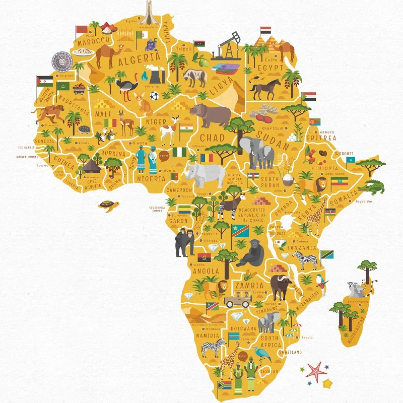
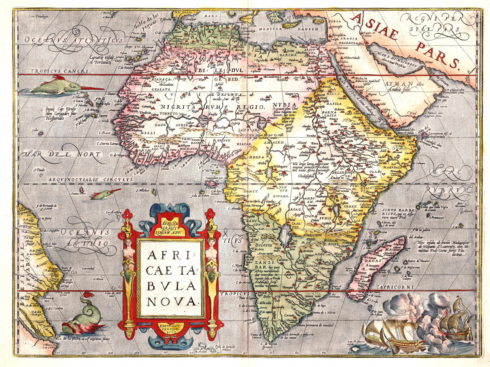

A história da África é vasta e diversa, abrangendo o surgimento do Homo sapiens, grandes impérios (como Egito, Mali e Kush), o impacto traumático do tráfico de escravizados e o colonialismo europeu. Com 54 países atuais e mais de 2.000 línguas, o continente possui uma trajetória rica, indo muito além dos estereótipos de pobreza e do período colonial.
Hoje, o continente é composto por 54 países com imensa diversidade linguística e cultural. Embora enfrente desafios herdados do período colonial, a África é um polo de crescimento econômico e inovação tecnológica, buscando maior integração através da União Africana.